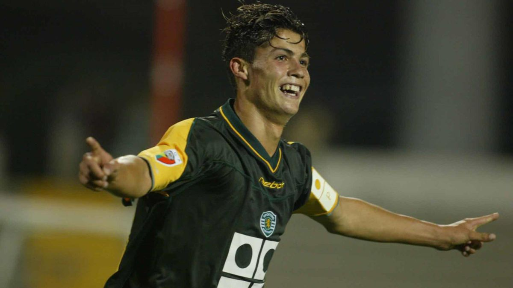
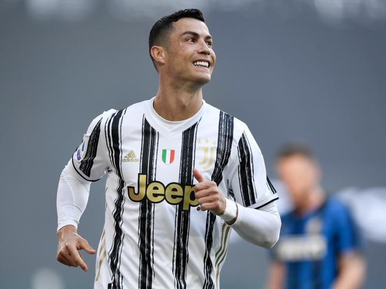
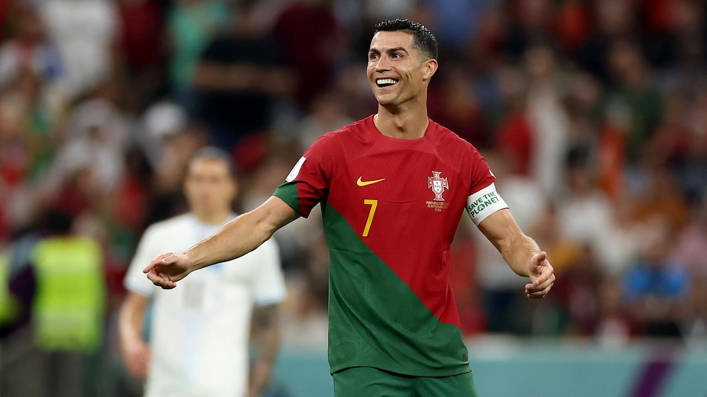
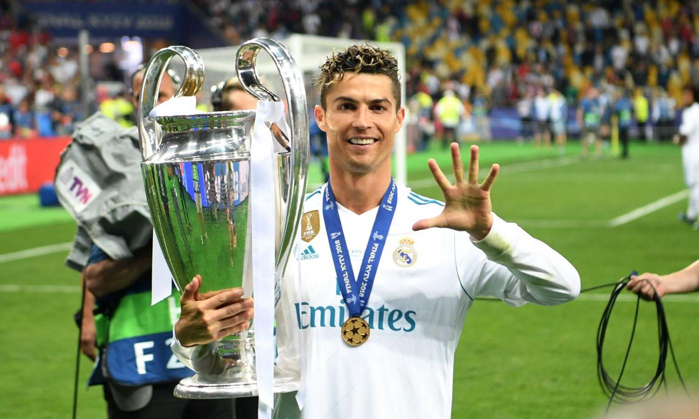

Cristiano Ronaldo dos Santos Aveiro, meglio noto come Cristiano Ronaldo (5 febbraio 1985), è un calciatore portoghese, attaccante dell'Al-Nassr e della nazionale portoghese, di cui è capitano e con cui è diventato campione d'Europa nel 2016 e ha vinto la UEFA Nations League 2018-2019. Soprannominato CR7 per via del numero di maglia che lo ha contraddistinto per gran parte della sua carriera, è ritenuto uno dei migliori calciatori di tutti i tempi.
È inoltre il marcatore più prolifico nella storia del calcio, nonché il detentore dei primati di presenze e di reti nelle nazionali di calcio. Rientra nella ristretta cerchia dei calciatori con almeno 1000 presenze in carriera, nella quale risulta essere l'attaccante con il maggior numero di apparizioni. Nel corso della sua carriera ha indossato le maglie di Sporting Lisbona, Manchester United, Real Madrid, Juventus e Al-Nassr, vincendo a livello internazionale cinque UEFA Champions League, due Supercoppe UEFA, quattro Coppe del mondo per club FIFA e una Coppa dei Campioni araba. Detiene il primato di presenze, di reti e di assist nella UEFA Champions League e nelle competizioni UEFA per club.
Con la nazionale portoghese, della quale è primatista di presenze e di reti, ha preso parte a cinque edizioni del campionato mondiale, arrivando al quarto posto nel 2006; a cinque edizioni del campionato d'Europa, vincendo quello del 2016 (primo titolo per il Portogallo) e arrivando al secondo posto nel 2004 e al terzo posto nel 2012; a un'edizione della Confederations Cup (2017), classificandosi al terzo posto; e alla fase finale di una UEFA Nations League (2018-2019), vincendo anche quest'ultima. Al campionato europeo detiene il record di reti e di presenze ed è l'unico calciatore sceso in campo ed andato a segno per cinque edizioni (nel 2012 e nel 2020 ottenne anche il titolo di capocannoniere). Ai Mondiali è l'unico calciatore andato a segno in cinque edizioni.
È comparso ininterrottamente nella classifica del Pallone d'oro dal 2004, vincendolo per cinque volte, e ha ottenuto quattro Scarpe d'oro. Per cinque volte si è aggiudicato anche il premio come migliore giocatore al mondo FIFA e per quattro volte quello come miglior giocatore UEFA. È stato inoltre nominato cinque volte miglior marcatore internazionale dell'anno IFFHS. La stessa IFFHS lo ha eletto miglior marcatore del mondo della decade 2011-2020. La rivista inglese World Soccer lo ha eletto per 5 anni World Player of The Year.
Vincitore di numerosi premi accessori, dal 2007 al 2020 ha fatto sempre parte della FIFA FIFPro World XI, è stato inserito 9 volte nella squadra dell'anno ESM, in 15 occasioni nella squadra dell'anno UEFA, in 11 volte in quella dell'Équipe e in 5 volte in quella dell'IFFHS. La rivista francese France Football lo ha inserito nella "squadra ideale degli anni 2010" e nel 2020 lo colloca nel Dream Team del Pallone d'oro come migliore ala sinistra della storia del calcio. Nel 2009 il Sun e Sports Illustrated lo inseriscono nella loro "squadra ideale del decennio 2000-2009" mentre l'IFFHS lo colloca nella "squadra del decennio 2011-2020". È stato inserito per 3 volte nell'All Star Team degli Europei.